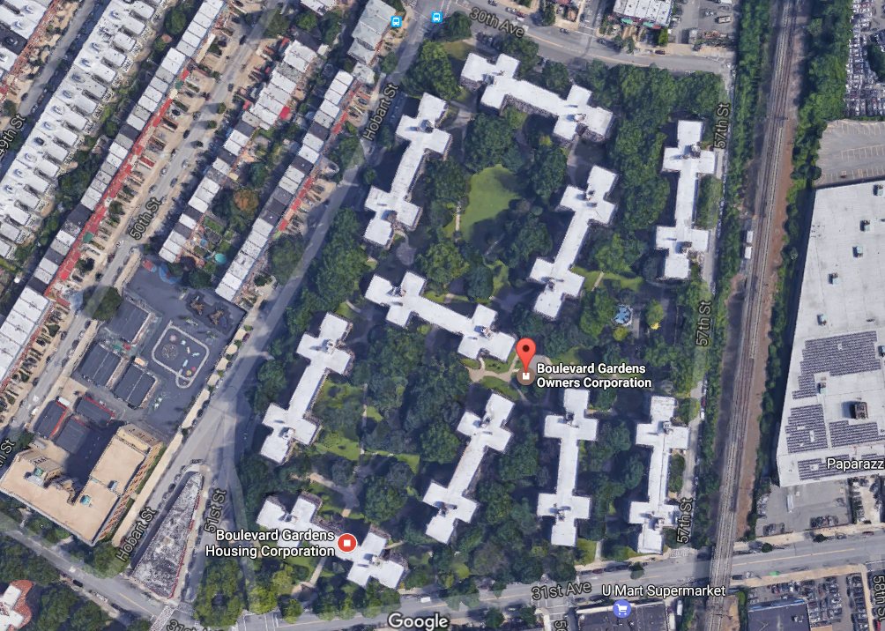
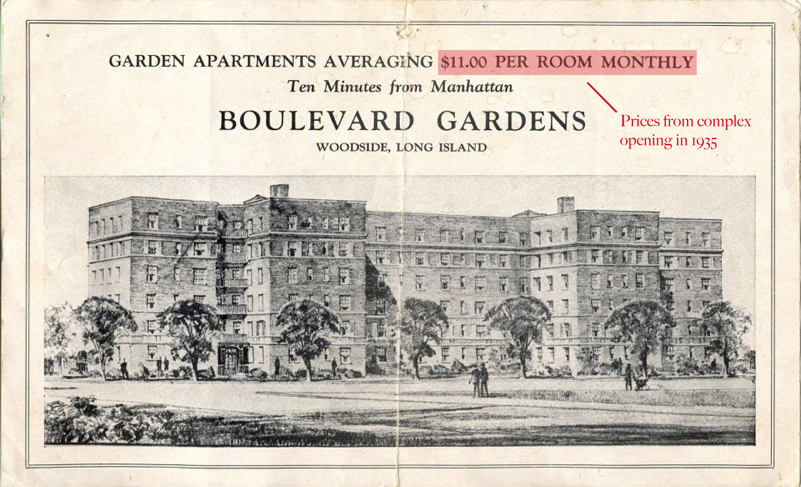
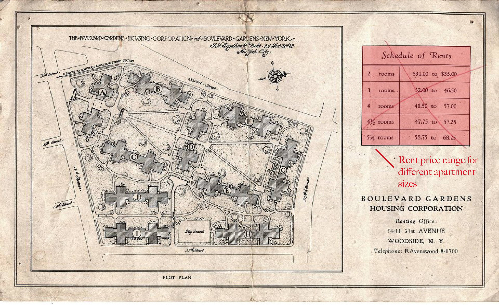
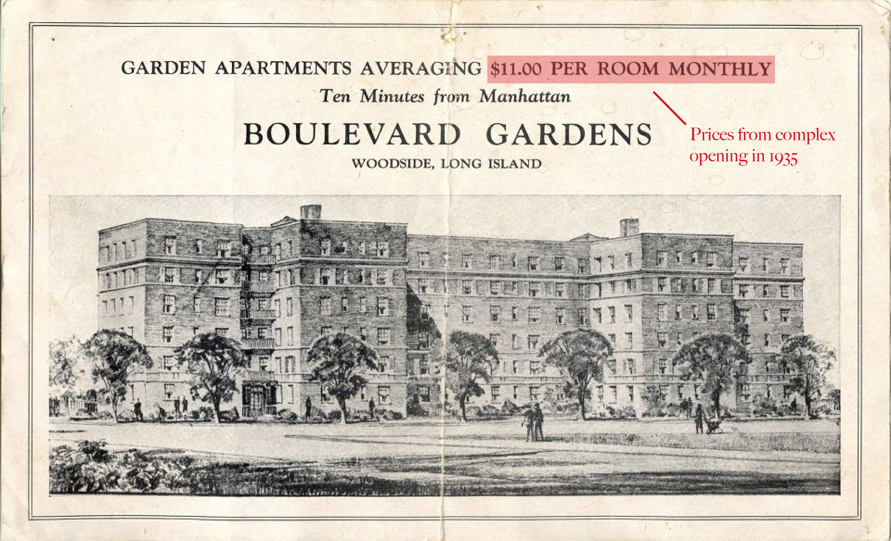
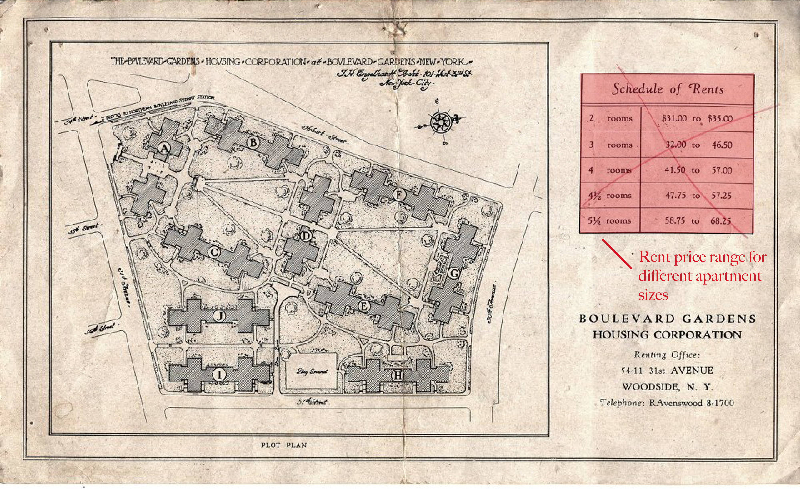

Welcome to Boulevard Gardens
Explore the historic Queens apartment complex and meet some of its residents
By Ritika Karnik
A look at Boulevard Garden's past and present
Tucked in between 31st and 30th Avenue in Woodside, Queens is an 82-year-old apartment building complex that has seen it all. As you enter and walk past the creme colored columns of the 31st Avenue neo-Georgian entryway, you are suddenly surrounded by large structures made of fading red and tan brick and a vast landscape of trees, grass, flowers, and shrubs. Two contrasting sounds greet you as you enter the grand environment: silence of a peaceful afternoon with birds chirping from the treetops and squirrels rustling in fallen leaves, and lively screams of children playing on the grounds, the “hello’s” and laughter coming from neighbors catching up, and the subdued murmurs of the older residents gossiping on the benches. Welcome to Boulevard Gardens.
With 10 six-story buildings and 12 acres of sprawling greenery, the Boulevard Gardens apartment complex consists of approximately 968 apartments housing both long-time and more recent residents. Constructed on top of a truck farm during the height of the Great Depression in 1935, Boulevard Gardens has managed to maintain its pre-war architectural charm and history as a Woodside symbol.
Aerial view of the Boulevard Gardens complex
The complex opened on June 25, 1935 with its buildings serving as low-rent model tenements with an average monthly rental price of $11 per room. After 3 months, the Boulevard Gardens Housing Corporation reported that all of its units had been leased. To accommodate the needs of the 3,000 new residents living in the apartment complex, the Dick-Meyer Corporation built a block front of 14 stores to provide the community with access to services like retail stores, a car garage, and movie theater.
In May of 1936, the New York State Board of Housing made a ruling for the Boulevard Gardens Housing Corporation to reserve their housing accommodation exclusively for low-income families and eliminate tenants with family incomes that are five times greater than their annual rent. State board data at the time reported that 3.8% of families in the complex had annual incomes of about $4,000 or more.
Then, in 1987, Boulevard Gardens underwent a major change as it transitioned from a low-income housing project primarily for city workers, civil servants, veterans, firefighters, and police officers to a co-op for shareholders.
Veterans still have a major presence in the complex as events and fundraisers are held throughout the year to support troops, such as the annual Memorial Day concert and the American Legion Post 1836’s Monthly 50/50 Raffle. In addition to the American Legion Post 1836’s office being located in the complex, a plaque commemorating soldiers who were residents of the complex that had lost their lives during World War II is found inside the 31st Avenue main entrance of the complex.
Although the transition to a co-op was meant to help Boulevard Gardens financially, the complex faced a dire financial crisis in the 1990s. With a defaulting sponsor unwilling to pay maintenance on his shares of the property, Boulevard Gardens defaulted on their mortgage of $36 million. Some shareholders stopped paying maintenance while others abandoned their units resulting in the deterioration of the property from lack of funds.
However, the complex avoided bankruptcy thanks to the efforts of its fellow resident and then Board of Directors President of the Boulevard Gardens Owners Corporation, James Lanza. Lanza was successful in convincing lenders to reduce the property's mortgage from $36 million to $26 million and obtained forgiveness of $4 million in interest and penalties. Lanza also gained control of the Board from the sponsor, hired the complex's own management company, and took back the majority of rent stabilized units from the sponsor, making Boulevard Gardens more financially stable.
After changing into a co-op, Boulevard Gardens now has a majority owner occupancy where shareholders are allowed to sublet their apartments for only two years. The average rent for a studio apartment ranges between $1,200 to $1,500 and $2,400 to $2,600 for a 3-bedroom.
 





In addition to the low supply and high demand of apartments in New York, Boulevard Garden’s accessibility to multiple train and bus lines and proximity to trendy neighborhoods such as Astoria are additional factors impacting the complex’s real estate value as 79.8 percent of the Woodside population identified living in family households in the 2010 US Census.
Historically, Woodside was a predominantly Irish, Italian, and German neighborhood, especially in the early to mid 20th century. However, the late 20th century saw an increase in the migration of Asian American and Central and South American families to Woodside. According to the 2010 US Census Bureau, Woodside consists of a 39.9 percent Asian and 33.5 percent Hispanic population with the neighborhood’s Asian population experiencing an increase of 21.9 percent from 2000 to 2010 and their Hispanic population with an increase of 6.1 percent. Some of the different ethnic groups that reside in Woodside include Chinese, Indian, Korean, Bangladeshi, Filipino, Dominican, Ecuadorian, Colombian, and Thai.
Representing the demographic changes of the Woodside community in the last few decades, Boulevard Gardens’ older residents who have watched the neighborhood change physically and socially, and its younger, more racially diverse individuals, despite their generational and background differences, both share one sentiment in common: Boulevard Gardens is their home.
Learn about some of Boulevard Garden's diverse residents and hear about the experiences and memories they have made while living in the complex
Gaetano and Patricia Pennasilico
66
Retired Navy and medical technician, and retired medical biller
Born and raised in Manhattan and Astoria, born in Brooklyn and raised in Astoria
Resident since 1974
Left, Gaetano Pennasilico. Right, Patricia Pennasilico.
Gaetano: I like the atmosphere here. When you walk out your door, it doesn’t feel like you’re in the city. You’re surrounded by trees and flowers.
Patricia: Going back years ago – you won’t see this now thank goodness – but it was very clan-like. You would have groups of people and cliques, and if you didn’t belong you were an outsider. You didn’t fit in. I was a victim of it. It was an incident involving my son and, I don’t like to talk about it, but we were ostracized. Those people are gone. Like Guy [Gaetano] said, it’s like a melting pot now. When you go to the playground, you see all kinds of people. The diversity has changed for the better.
G: There’s not much of a sense of community as there used to be.
P: There’s a lot of people moving in but not a lot of people are attending or going to go to the meetings [annual shareholders’ meeting].
G: They just want to come in and live here and that’s it.
P: They don’t want to get involved any further.
G: The little parking lot down the block, that used to be a park for kids. No one played in it but it was still there. We used to play handball back then and baseball and then the owners used to complain that the kids were making too much noise. That property just sat there for years.
P: My only complaint is that when we went co-op, they took away a lot of the development away. The quaintness went away. The gardens looked older.
P: We’re going to renovate our apartment and stay. We’re not going anywhere.
Jean and Bill McClean
65 and 62
Retired
From Far Rockaway, New York, and Astoria
Resident since 1992
Left, Jean McClean. Right, Bill McClean
Jean: We arrived on January 22, 1992. I walked into Fred and Ruth’s apartment [the people that helped get them the apartment] at 8 o’clock in the morning, and Freddie who was standing there, he goes, ‘Would you like a drink?’ And I said, ‘Why? It’s only 8 o’clock in the morning?’ And he said, ‘Trust me. You’re going to want one.’ I walked into our apartment, looked at [Bill] and said, ‘I don’t know where you’re spending the night but I’m going back.’ There was no dishwasher, the rugs were filthy, there was “rust stains” on the floors, on the walls, there was a meat hook hanging out of the ceiling over the kitchen. There were burnt matches in the freezer. The place had not been painted. It was an absolute disaster area. I was in tears. I said, ‘I can’t stay here.’ Ruth and Fred took us in and within three days, they had their son, their daughter, their son’s friends, their neighbors from upstairs and downstairs, they all came into our new apartment and had the electrics fixed, the closets back together. They painted the place. They cleaned the place from top to bottom, and these were people I had never met. I still get teary eyed. I found my home at that moment. And that’s why we’ll never leave.
Bill: I see Boulevard Gardens as an investment.
J: I see it as my home.
B: She feels more at home than I do, can you tell? She knows more people than I do. She’s much more social than I am.
J: I think I’ve become more comfortable over the years living here. I think it comes with age too. I’ve gotten to that point and I’ve made my friends, and the ones that I’m friendly with I’ll probably always be friendly with until the day I die. And the rest of them, I don’t care.
Eric J. Bowen and Elizabeth M. Bowen
78 and 71
Retired and Housewife
From Pakistan
Resident since 2001
Third from left, Eric J. Bowen and right, Elizabeth M. Bowen with family
Eric: We came from Pakistan in 1989. I started a job here for Columbia University as a mechanic for 20 years. Before we lived in Manhattan. In 2001 August we bought this apartment. It’s a very nice place. Our grandchildren were also born here and go to school here.
Elizabeth: One Indian family who lives downstairs we all met in church and go to church together. Everybody says ‘hi’ ‘hello’ to us.
Elizabeth: We are Catholic. We attended a Catholic church in Pakistan. There are lots of Catholic and Protestant churches there and Christian schools.
Eric: All of our children studied in the St. Jude and St. Patrick schools there.
Eric: Us starting here, we had no good job. Our children worked in McDonald’s and Burger King.
Elizabeth: Now everyone has a nice job after they took computer classes here and took out government loans from here.
Elizabeth: We’ve already traveled lots.
Eric and Elizabeth: Australia, France, Paris, Italy, London, Norway.
Eric; Sydney is my favorite place. My family is there.
Eric: I got married in 1962. My father’s friend he went to our house for the arrangement. I was 25 and she was 18 at that time. Now it’s 53 years together. Elizabeth: I don’t miss Pakistan. It’s a nice place but my family is not there.
Elizabeth: We will continue to live here.
Eric: This is the end.
Patricia Araujo
37
Attorney
From Brazil
Resident since 2010
"[I got] divorced. My ex-husband still lives in [our] old building and I moved to a different apartment. We met at a New Year’s Party in New York City. [Divorce] was horrible. A divorce is something where your plans for the future die all at once, and then you need to create new ones. I moved to Harlem for a year to save money so I could buy something else. And then I looked, and I looked, and I looked, and I ended up coming back here because it was the best price for the space that I could find. Even when I lived in [our] one bedroom apartment, I already had an eye out for a three bedroom.
I think my goals now are more. I think I have achieved some important professional goals and I got a job that is much better than what I used to do before. I feel more comfortable financially and I, at that point, had to decide if I wanted to move back to Brazil or if I really wanted to live here in the US. I decided to stay so I think that changed my perspective about living here in the sense that, first I was in the US to learn English and after that, I’m here to get a masters degree and after that, I’m here for my husband. And then at that point, it became, I’m here because I want to be here. I don’t think much more about the time that I was married. It’s almost like it’s a part of my life that I put aside. I think it’s now been four years."
Jonathan Tellez and Elizabeth Matarrita
33 and 32
Wealth management at UBS, wealth management at Merrel Lynch
From Costa Rica
Resident since 2014
Left, Jonathan Tellez. Right, Elizabeth Matarrita
Elizabeth: We see a lot of children over here so it’s more of a family place.
Jonathan: The kids playing out in the street that’s very familiar. In Costa Rica, it’s very very typical. Kids just playing soccer on the street in front of their house so that’s one familiar aspect that I really really like. I don’t think you can spot kids playing out on the streets so freely and safely other than here. I’ve never seen that anywhere.
J: Having that mix of people is part of that homey feeling. Just as I like to see the kids playing out safely, I like to see the older people out here in the chairs knowing that they’re safe and in their surroundings. It’s a nice thing to see both the new generation and the old generation just feeling at home.
E: I know this place used to be for older generations but we have been noticing a lot of couples in the last year moving in, even our neighbors. An old couple moved out and we have a new younger couple with a newborn so it’s definitely a younger crowd coming in. But there’s still a balance.
E: I love how it has a lot of green areas. We want to have children so I can picture myself going out and having a walk with my baby and my children and then they go out here and play. For now, we are looking into starting a family and having kids and settling in a place that we love and that we definitely can see growing a family.
An inside look at the sights and sounds of Boulevard Gardens